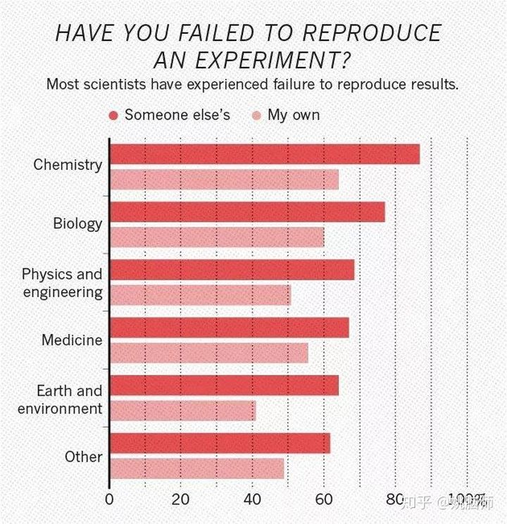
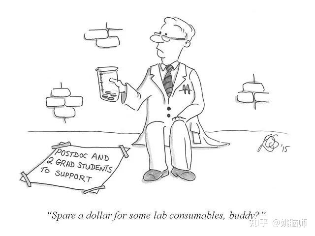
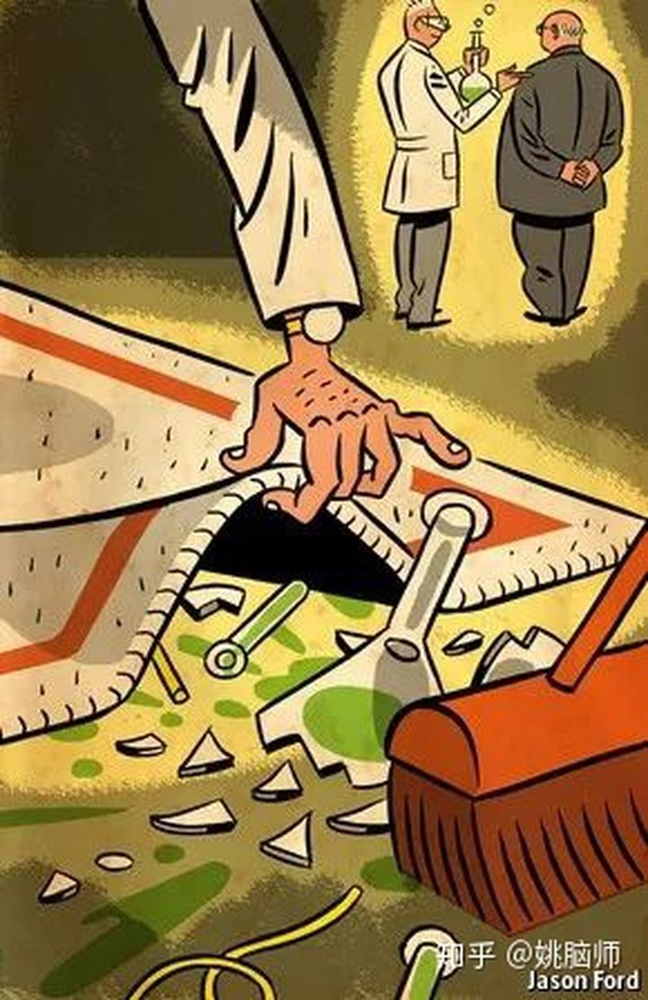
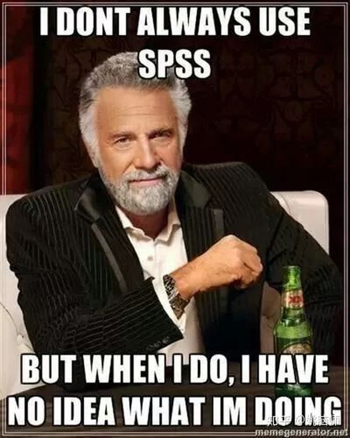

前几天果壳网用惊叹号爆料著名的斯坦福监狱实验彻头彻尾就是个骗局，大喊心理学药丸。
而姚脑师觉得经典心理学实验被质疑，恰恰反映了心理学正在迅猛发展和崛起。
实验之所以经典，指的是它具有典型性，在很长一段时间内是业内的杰出代表。
经典实验开启了一个时代，但不代表是永恒的真理。
它们的退场，也正象征着新时代的到来。
（实验）心理学在短短几十年里，从问卷调查到记录大脑活动，从t-test到mixed models，从闭门造车到开放科学（open science），她的成长速度着实让人刮目相看。
成长的路上不可避免地要犯错。在摸石头过河的过程中，经典实验被推翻或质疑是再正常不过的了。
那么，争议十足的斯坦福监狱实验到底是怎么回事？
只有心理学研究是重灾之地吗？
为什么学者们都不再好好做研究？
心理学研究之殇究竟缘起何处，又将归向何方？
1 由斯坦福监狱实验看实验的重复性问题
1971年菲利普津巴多（Philip Zimbardo）博士在斯坦福的心理学系建了一个假监狱，意从狱警和囚犯的互动中研究人对权威的服从。
津巴多将大学生志愿者被随机地分配到狱警组和囚犯组，自己则扮演狱长的角色。
实验开始不久，就有两个“罪犯”要求退出实验。据说志愿者们入戏太深，“狱警”们开始虐待“囚犯”，而“囚犯”则出现各种精神问题，有的要暴动脱狱。双方冲突不断升级，导致整个实验仅持续了6天就不得不终止。这些志愿者的行为似乎说明人性是由环境决定的。手握权力的人们会很快进入自己的“社会角色”而对弱者施暴。
斯坦福监狱实验由于它的独创性，被几乎所有的社会心理学的教科书无脑地、毫无批判性地引用。
然而在两周前，记者Ben Blum在英语世界的博客平台Medium爆料，说当年参与实验的“狱警”并不是以他们的自由意愿参与实验，而是被研究者引导对“囚犯”们实施精神上的虐待。
这就意味着，“狱警”的虐待行为并不是人们在“监狱”情境下的自然反应，而是津巴多有意影响的结果。因此所谓环境改变人性的说法也就不成立。
**事实上，斯坦福监狱实验受质疑早不是新鲜事了。**业内同行早在1975年就开始吐槽津巴多了。该实验不仅在伦理上不道德（虐待“囚犯”），而且在实验设计上也很不靠谱。它既没有对照组（在非监狱环境下），也没有客观靠谱的因变量（dependent variable），而主要是靠主观传闻作为证据。当时放出来的录像证据等也陆续被曝为“演戏”。就连这次 “狱警被引导施暴”的料早在2005年就已经见报了，并不是这个月才有的事。所以Ben Blum这个记者在6月一注册Medium就吐槽津巴多，多半是借机来推广自己。
Ben Blum有没有炒作不重要，**重要的是我们要意识到斯坦福监狱实验结果不靠谱并不是个例。学科发展早期学者对实验设计和统计的理解不深，做出的东西不靠谱很正常。但是很多现代心理学的实验却也常受到质疑或是无法重复。**2015年《科学》杂志刊登了一篇文章组团重复了心理学顶级期刊的100个实验 [1]。他们发现虽然97%的原文报道了显著的结果，有只有39%的实验结果能被其他实验室重复出来，高达61%的实验结果无法被重复！
事实上，实验结果重复不出来在整个科学界都很普遍——不仅仅是心理学。2016年《自然》杂志做过一个1500人的调查，发现各个学科实验结果重复不出来大多是家常便饭（见下图）[2]。

如87%的化学家有重复不出前人结果的经历，64%的化学家自己的实验都重复不出来。在物理与工程学科，69%的人重复不出别人的结果，51%重复不出自己的结果。
只不过，相比其他学科，心理学跟我们日常生活更相关，因此心理学实验重复性不好会更容易受大众关注。
那科学实验为什么重复性很差呢？
姚脑师觉得有两大原因：一是学术文化急功近利；二是学者缺乏严谨的统计训练。
2 学术文化急功近利
在老百姓的想象中，科学家们每天废寝忘食泡在实验室里畅游知识的海洋，过着与世隔绝自娱自嗨的生活。
而现实并非如此。
很多科学家们被迫每天忙着申课题、赶着发文章，根本没有功夫静下心来严谨地探究基础的科学问题。
**而且更糟糕的是，**越是世界排名靠前的大学，它们对老师给学校挣钱发文的能力要求越高，并跟终身教职和职称挂钩——甚至因此逼死了教授。
2014年英国帝国理工学院的Stefan Grimm教授就因为其课题收入没有达到每年20万英镑的水平要被学校开除，万般绝望之下走上了自杀的道路，震惊了学界。
姚脑师所在的英国曼彻斯特大学（QS2019全球排名29；清华名列17,、北大名列30、复旦名列44）已经（惨无人道地）把学者们都简化成了一个号码，按照课题经费收入来排名。在每年考核的时候还会下派课题申请的任务。比如姚脑师今年就要申请三个课题，压力真的蛮大的。本应当天天思考“这是为什么？这是怎么回事？”的大脑，在重压下天天想的是“哪里可以申点钱？”

相比之下咱们中国的学校则对发文的数量比较看重，对老师和学生的发文数量都有硬性要求。这逼着他们“短平快”地在PLoS ONE，Scientific Reports等“神刊”上发文，而不是耐住性子做长期的研究。这样的体制完完全全与学科的长远发展需求和学术素养的沉淀背道而驰。
正是由于学校对钱和文章的执着，学者们被逼得越来越急功近利：
一、他们更愿意开展有猫腻的研究以获得快速的回报（用于申请课题或者评职称）；
二、他们不愿意花时间和金钱重复自己的实验（反正也经常重复不出来，不能自己打脸啊）；
三、他们倾向于夸大自己研究的结果（以便名利双收）。
在这种环境下也就不难理解为什么像Diederik Stapel这种已经做到教授级别的学者，也要宁愿冒着身败名裂的风险去背叛科学、铤而走险，在数年内伪造了至少55篇期刊文章，导致很多博士生把青春浪费在了由谎言堆砌起来的研究上。。。

但客观而理性地讲，真正故意学术造假的学者毕竟是少数。
大部分人只是在实验中有各种倾向，带着有色眼镜看数据。
最让人无奈的是很多学者们对科学其实是一腔热血，但却因为对统计的无知，无法正确地解读数据，做出了错误的实验结论。
3 缺乏统计训练
姚脑师入行心理学后陆续见识过很多教授令人大跌眼镜的统计水平。
几年前，我在肯特大学做博后期间听一位教授讲过他的研究——精神病人受脑刺激后的康复情况。他把治疗后病人的认知测验结果按时间顺序来表示，然后解释：“康复第一天的时候病人认知比较不行，是在这个水平。但是第二天有显著提高哦（指图）。然而不晓得怎么回事，第三天又降下来了，可能病人需要点时间。。。”我坐在下面那个急，心想：哥哥，能不能把疗程前后的测量值求个平均，t-test比较一下？数据每天一上一下跟股票似的，八成只是随机的测量误差啊！
近几年，心理学业内逐渐意识到了自己在统计上的硬伤，逐渐推广使用R给固定效应（fixed effects）和随机效应（random effects）同时建混合效应模型（generalised linear mixed models /linear mixed models）来做统计上的判断，并抛弃了ANOVA等对随机效应建模能力有限的方法 [3]。
新的方法大大减少了假阳性的结果，也就意味着一些本可以发表的显著结果变得不显著，所以很多人对新方法有抵触情绪。在加上很多人走出校园后就不再学习，时至今日很多学者仍然坚持使用陈旧的统计方法。
比如很多心理学领域在做统计的时候是不考虑随机效应（尤其是实验材料by item的随机效应）的。比如做面部感知的需要随机选取一系列的脸给被试观看。由于样本大小有限，选取的脸很可能会左右实验的结果。如果随机再选另一组脸，可能结果就会不一样。如果不考虑实验材料的随机效应，得出的结论就只适用于该样本，而不能泛化到所有的人脸上。
**由于很多学者在统计上的技能停滞不前，导致当今大学本科的统计教育还停留在“SPSS点菜单”的水平。**在英国，只有少数几个学校（如格拉斯哥大学，姚脑师的博士就读学校）的心理系走在行业前列，在本科阶段就教学生用R做linear mixed models。大部分学校的毕业生，从他们的毕业论文中就可以看出来，对统计是“很傻很天真”。当他们开始学术生涯的时候，如果跟的老师不对，就很可能会像他们的前辈一样重蹈覆辙。

4 心理学的未来？学术界的未来？
就实验重复性来看，心理学学科其实不断在进步。
通过业内前辈的不断摸索和努力，心理学的统计方法是越来越严谨。
比如早年脑成像技术刚用在心理学的时候，常被同行吐槽多重比较（multiple comparison）的问题。脑成像技术将大脑分割成无数的立方体（比如约4.4万个3 x 3x 3 mm的立方体），然后对每一个立方体内在不同实验条件下的脑活动水平进行比较。如果每一次比较都允许5%一型错误率（Type 1 error；即假阳性错误），那进行全脑比较出现假阳性的几率是1-95%^44000 ≈ 100%。
如今脑成像在统计上已经比较成熟，发展出了各种理论和方法（如random field theory，多重比较纠正等）大大地减少了假阳性的几率。在期刊审稿的时候对样本大小和显著性程度的要求也越来越严。
从大的趋势看，心理学人也会越来越接受开放科学和实验预注册等好的做法。比如英国各大研究学会要求他们资助的学者必须在发表文章的时候公开他们的数据，以供同行和大众检验和二次分析。而那些学术水平突出的实验室也都自发带头对实验进行预注册以减少主观上对结果的影响**。**
相比之下，制度造成的急功近利的学术文化则是一个泛学术界的问题，可能需要好几代人的努力才会有好转。
一方面，高等教育高歌猛进造成人才过剩，再加上经济发展不佳，政府对科研支持不力，使**学术界内竞争过于激烈，出现僧多粥少的情况。**在巨大的生存压力下，学校想出了各种学术指标（如课题经费，文章数等）来评估学术表现，但它们的评估周期都过短，不可避免地催生学术上的急功近利。
另一方面，现代高校的管理层大多是管理出身，缺乏教育理念。**在他们眼里，大学就是一个赚钱机器，而不是一个科研平台和教育学府。**管理层做的决定，多是从最大化短期经济利润来考虑，而不在乎这些决定对科研教育长期的影响。
比如去年夏天英国罗素集团高校炒了一批教授的鱿鱼，理由竟然是他们太贵了，简直不可思议！管理层完全不在乎炒鱿鱼对在职员工士气的影响，也不考虑有经验的教授们对年轻老师的引导和支持。
到了今年春季，英国高校又因为要缩减老师的养老金导致老师们在全国范围内广泛罢工，让今年在英国读书的小伙伴深受其害。
管理层觉得能省则省，天经地义。但即使从经济角度去考虑，这些也是目光短浅的行为，因为教职工的不满会潜移默化地影响学生的学习动力和学习满意度，导致教育质量下降，从而影响学校的生源，从长远看会减少学校的收入。
要想扭转这种局面，我们要齐心协力，勇于承担责任，把自己的教育理念带到学校的管理层，甚至是组团游说政府，从上至下来改变学术界的管理制度。
好消息是，一些改变已经正在发生。
**比如近几年英国上下对学术产出的评估正慢慢地从量向质的方向改变。**英国政府每6-7年对全国高校学术产出做一个评估（Research Excellence Framework）来决定科研的拨款。在2021年评估时提交的文章从每人4篇下调到了平均2.5篇/人。这就允许学者在6-7年内专心打造2-3篇高质量的文章，体现出了英国政府对“质”的高度重视。由于制度的改变，英国高校普遍对文章数量没有什么硬性要求，而对文章质量则有非常高的期望。
除了对文章质量的评估，英国政府还很重视科研对经济，社会，文化，公共政策和服务方面的影响，在学术产出评估里专门设有“影响力”这一个维度。由于政府的导向，英国国内各大科学院在评审课题的时候特别关注申请人如何能通过科研造福大众，给纳税人的钱一个交代。制度改变了，学校也不得不做出适应和调整。比如曼彻斯特大学除了研究和教学外，还专门把社会责任感（Social Responsibility）作为考核学者的一个重要指标。
既然有了前车之鉴，我想只要我们能同心协力，鼓励政府出台合理的政策，是可以慢慢改善学术界的体制和文化的。
万里长征，始于足下。
参考文献
- Open Science Collaboration. (2015). Estimating the reproducibility of psychological science. Science, 349(6251), aac4716.
- Baker, M. (2016). 1,500 scientists lift the lid on reproducibility. Nature News, 533(7604), 452.
- Barr, D. J., Levy, R., Scheepers, C., & Tily,H. J. (2013). Random effects structure for confirmatory hypothesis testing: Keep it maximal. Journal of memory and language, 68(3),255-278.